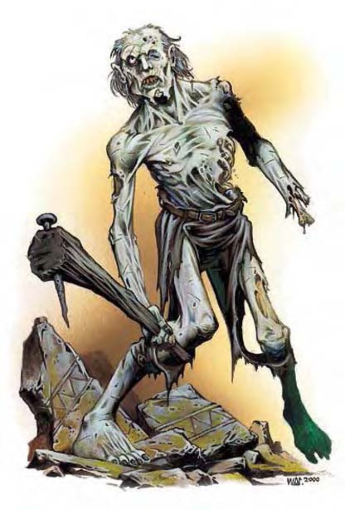

僵尸是被黑暗邪魔鬼法活化的尸体，他们没有心智，只会摇摇晃晃地忠诚执行创造者的命令。僵尸的外观非常惹人厌，因为他们就是从墓穴中爬出来的，尸体有些地方腐烂，有些地方被虫蛀，身上穿着破破烂烂的寿衣，随时都带着一股死亡的腐败气息。因为僵尸完全没有智力，所以只能接受简单的命令，例如：“杀死任何踏入房间的人”。
创造僵尸僵尸是一种后天模板，可以套用在任何具有骨骼系统的实体生物上（被套用的生物称为基底生物），但不死生物除外。
体型及种类：生物种类变更为不死生物，除了阵营（例如：善良）及物种（例如：类地精或爬行生物）之外的亚种不变。他们不会成为强力亚种。除了此处所列说明之外，僵尸所有数据和特殊能力都比照基底生物。
生命骰：失去职业等级所获得的生命骰（最少为1），剩下的生命骰乘以2，并一律改为d12。若基底生物原本生命骰超过10（因经验值提升而获得者不计），则无法使用“操纵死尸”法术来变成僵尸。
速度：若基底生物会飞，机动性降到笨拙。
防御等级：依照僵尸的体型不同，天生防御加值会获得下表中的加值。
| 体型 | 天生防御加值 |
|---|---|
| 超小型以下 | +0 |
| 小型 | +1 |
| 中型 | +2 |
| 大型 | +3 |
| 超大型 | +4 |
| 巨型 | +7 |
| 超巨型 | +11 |
基本攻击：僵尸的基本攻击加值等于生命骰的一半。
攻击：僵尸保有基底生物原本的所有天生武器、人造武器和擅长武器能力。另外还具有挥击攻击。
伤害：天生和人造武器的伤害值不变。挥击可以造成的伤害值则随僵尸的体型而不同，若基底生物原本就有挥击攻击，伤害值取较高者。
特殊攻击：僵尸不具有基底生物的原有特殊攻击。
特殊能力：僵尸多半不具有基底生物的原有特殊能力，但可以保有增强近战或远程攻击的特异能力。除此之外，僵尸会获得下列特殊能力：
单动作限制（特异）：僵尸的动作非常慢，一轮只能进行一个移动动作或攻击动作。若要在同一轮进行攻击并且以标准速度移动，则视为冲刺。
伤害减免 5/挥砍：僵尸只是一大团腐烂的血肉。
豁免检定：强韧、反射和意志豁免检定基本加值分别为：+1/3HD、+1/3HD 和 +1/2HD +2。
属性：僵尸的力量值+2，敏捷值-2，没有体质或智力值，感知值变为10，魅力值变为1。
技能：僵尸没有任何技能。
专长：僵尸失去基底生物所有专长，但获得“健壮”专长。
环境：任何陆地和地底。
组织：任何。
挑战级数：随生命骰而有所不同，如下表。
宝藏：无。
阵营：总是中立邪恶。
进化：与基底生物相同，但生命骰乘以2（最多20）。若基底生物的进化字段为“视人物职业而定”，成为僵尸之后无法进化。
等级修正值：―
| 资料栏位 | 熊地精僵尸 中型不死生物 |
食人魔僵尸 大型不死生物 |
牛头人僵尸 大型不死生物 |
翼龙僵尸 大型不死生物 |
土巨怪僵尸 大型不死生物 |
灰袋兽僵尸 大型不死生物 |
|---|---|---|---|---|---|---|
| 生命骰 | 6d12+3 (42HP) | 8d12+3 (55HP) | 12d8+3 (81HP) | 14d12+3 (94HP) | 16d12+3 (107HP) | 20d8+3 (133HP) |
| 先攻 | +0 | +0 | -1 | +0 | +0 | -1 |
| 速度 | 20英尺 (6格, 不能奔跑) | 40英尺 (8格, 不能奔跑) | 30英尺 (6格, 不能奔跑) | 20英尺 (4格, 不能奔跑)、飞行60英尺 (不良) | 20英尺 (4格, 不能奔跑)、遁地20英尺 | 30英尺 (6格, 不能奔跑) |
| 防御等级 | 16 (+5天生、+1轻型木盾)、接触10、措手不及16 | 15 (-1体型、-2敏捷、+8天生)、接触7、措手不及15 | 18 (-1体型、-1敏捷、+8天生)、接触8、措手不及18 | 20 (-2体型、+12天生)、接触8、措手不及20 | 19 (-1体型、+10天生)、接触8、措手不及19 | 16 (-1体型、-1敏捷、+8天生)、接触8、措手不及16 |
| 基本攻击/擒抱 | +3 / +6 | +4 / +14 | +6 / +15 | +7 / +16 | +8 / +19 | +10 / +21 |
| 攻击 | 钉头锤+6近战 (1d8+3)；或挥击+6近战 (1d6+3)；或标枪+3远程 (1d6+2) | 巨木棒+9近战 (2d8+9)；或挥击+9近战 (1d8+9)；或标枪+1远程 (1d8+6) | 巨斧+10近战 (3d6+7 / x3)；或抵撞+10近战 (1d8+5)；或挥击+10近战 (1d8+5) | 挥击+11近战 (2d6+7)；或爪勾+11近战 (1d4+5) | 爪抓+14近战 (2d4+7)；或啮咬+14近战 (2d8+3) | 啮咬+16近战 (2d6+7)；或挥击+16近战 (1d8+10) |
| 全力攻击 | 钉头锤+6近战 (1d8+3)；或挥击+6近战 (1d6+3)；或标枪+3远程 (1d6+2) | 巨木棒+9近战 (2d8+9)；或挥击+9近战 (1d8+9)；或标枪+1远程 (1d8+6) | 巨斧+10近战 (3d6+7 / x3)；或抵撞+10近战 (1d8+5)；或挥击+10近战 (1d8+5) | 挥击+11近战 (2d6+7)；或爪勾+11近战 (1d4+5) | 爪抓+14近战 (2d4+7)；或啮咬+14近战 (2d8+3) | 啮咬+16近战 (2d6+7)；或挥击+16近战 (1d8+10) |
| 占用/触及 | 5英尺/5英尺 | 10英尺/10英尺 | 10英尺/10英尺 | 10英尺/5英尺 | 10英尺/10英尺 | 10英尺/10英尺 |
| 特殊攻击 | ― | ― | ― | ― | ― | ― |
| 特殊能力 | 限制单动作、伤害减免5/挥砍、黑暗视觉60英尺、不死特性 | 限制单动作、伤害减免5/挥砍、黑暗视觉60英尺、不死特性 | 限制单动作、伤害减免5/挥砍、黑暗视觉60英尺、不死特性 | 限制单动作、伤害减免5/挥砍、黑暗视觉60英尺、不死特性 | 限制单动作、伤害减免5/挥砍、黑暗视觉60英尺、不死特性 | 限制单动作、伤害减免5/挥砍、黑暗视觉60英尺、不死特性 |
| 豁免 | 强韧+2、反射+2、意志+5 | 强韧+5、反射+0、意志+6 | 强韧+4、反射+3、意志+8 | 强韧+4、反射+4、意志+9 | 强韧+5、反射+5、意志+10 | 强韧+6、反射+5、意志+12 |
| 属性 | 力量17、敏捷10、体质―、智力―、感知10、魅力1 | 力量23、敏捷6、体质―、智力―、感知10、魅力1 | 力量21、敏捷8、体质―、智力―、感知10、魅力1 | 力量21、敏捷10、体质―、智力―、感知10、魅力1 | 力量25、敏捷11、体质―、智力―、感知10、魅力1 | 力量25、敏捷8、体质―、智力―、感知10、魅力1 |
| 技能 | ― | ― | ― | ― | ― | ― |
| 专长 | 健壮 | 健壮 | 健壮 | 健壮 | 健壮 | 健壮 |
| 环境 | 温带山脉 | 温带丘陵 | 地底 | 热带平原丘陵 | 地底 | 温带沼泽 |
| 组织 | 任何 | 任何 | 任何 | 任何 | 任何 | 任何 |
| 挑战级数 | 3 | 3 | 4 | 4 | 5 | 6 |
| 宝藏 | 无 | 无 | 无 | 无 | 无 | 无 |
| 阵营 | 总是中立邪恶 | 总是中立邪恶 | 总是中立邪恶 | 总是中立邪恶 | 总是中立邪恶 | 总是中立邪恶 |
| 进化 | 无 | 无 | 无 | 无 | 无 | 无 |
| 等级修正值 | ― | ― | ― | ― | ― | ― |